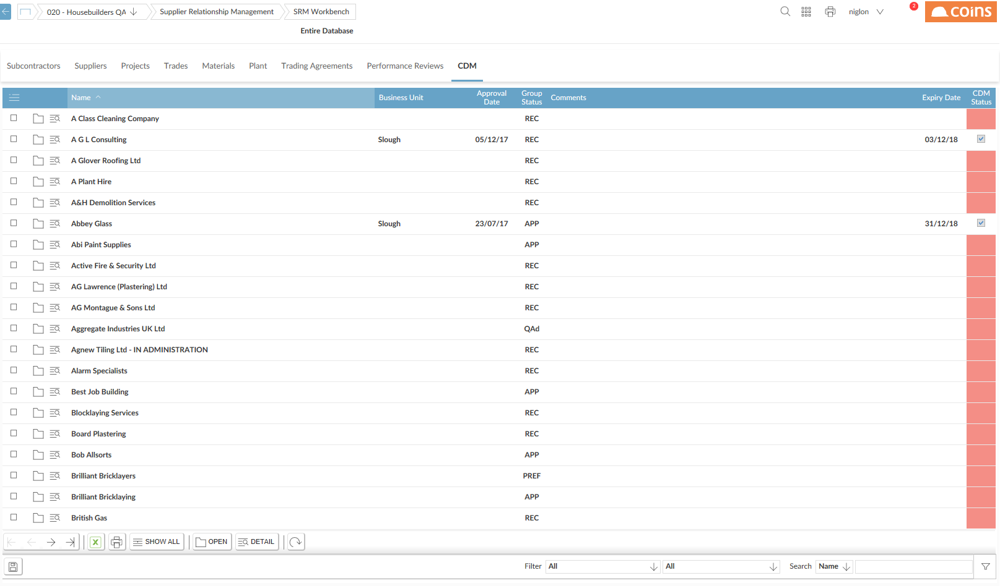
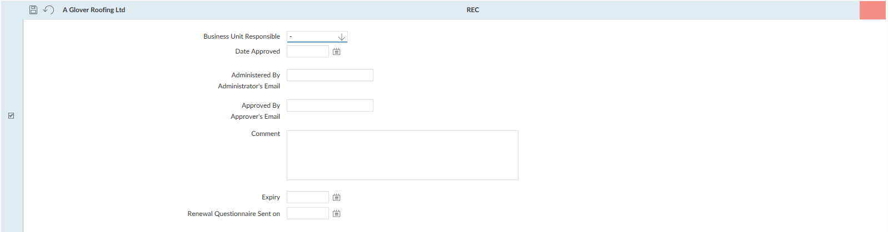

CDM
The Construction (Design & Management) Regulations deal with health and safety regulations for subcontractors. See http://www.hse.gov.uk/construction/cdm.htm.
In , you can optionally record whether you have approved a subcontractor as conforming to the CDM regulations. You can set this approval to expire, and you can control whether users can include on price , or raise orders for, subcontractors who do not currently have approval.
The label CDM is configurable and can be replaced with other appropriate text, such as "SSIP" or "CHAS".
To approve a subcontractor from a CDM perspective:
- Go to SRM Workbench.
- Click the CDM tab.

- Open the record for the subcontractor.

- Fill in the approval date, the person and business unit responsible, the date when this approval expires, plus any additional information you require.
- Click
 .
.